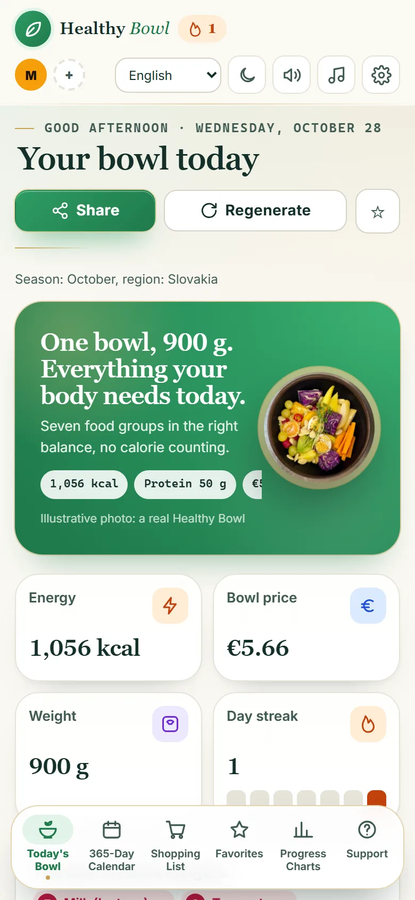
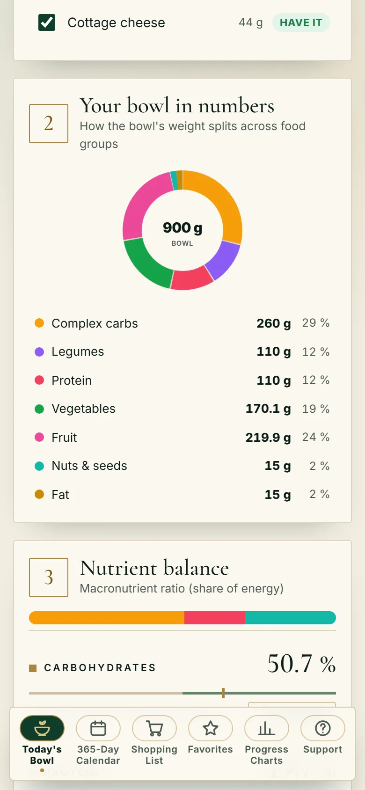
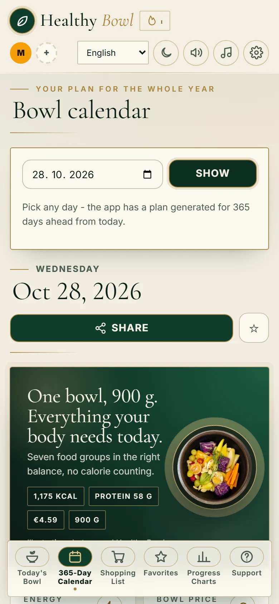
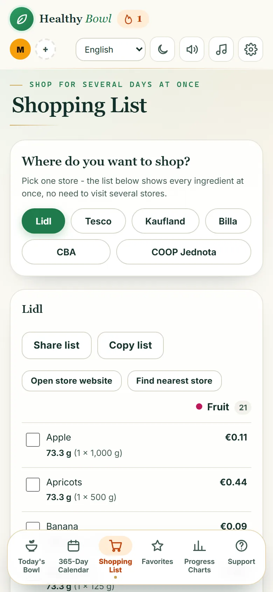
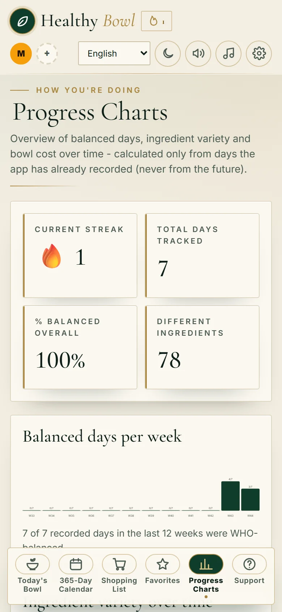
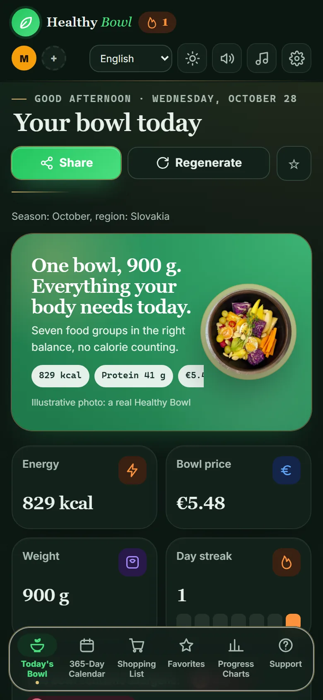

1
Open the app
Nothing to install from a store and no account needed. Open the link on your phone and add it to your home screen. It works like any other app.
A bowl full of health: balanced, different every day. Macronutrients according to WHO recommendations, and the app keeps track of them in every 900 g bowl. Eat mindfully, attentively, and until full.


You open the app and you are done. Healthy Bowl does the rest.
Nothing to install from a store and no account needed. Open the link on your phone and add it to your home screen. It works like any other app.
One balanced bowl a day, 900 grams, split into seven food groups. You see every ingredient, its amount and its price.
Pick a week and the app merges the ingredients into one list by shop. Tick items off right in the store.
Every bowl covers what the body needs each day: slow carbs, fibre, protein, vegetables, fruit, nuts and healthy fats. Hover over the ring to see what is where.
Values are an example of a typical bowl. Exact grams change by day and ingredient.





The videos we shared on our Facebook page.
One bowl a day with an unpredictable combination of ingredients, so the body gets a wide range of vitamins and minerals.
Ingredients for several days in one list by shop. Tick off in the store.
See the price of the bowl and every ingredient. Prices adapt to your region.
Gluten, lactose, nuts, soy, eggs, fish, seafood. Choose what you need to avoid.
When something is missing, the app suggests a swap with a similar nutritional profile so the balance holds.
The app prefers ingredients that are in season and available in your region.
For every ingredient in the bowl you find a short way to prepare it.
Every household member has their own plan, allergies and progress in one app.
See in one click how your macros held within the WHO range over the last week or month.
An optional reminder during the day so you do not forget to drink water.
The interface, ingredient names and preparation notes switch without a restart.
Records are stored on your phone, and today's bowl and the shopping list work without internet.
The middle path between a diet and eating purely for pleasure.
Healthy Bowl is an app-designed bowl built on balanced eating, the middle path between a diet of restriction and eating purely for pleasure. We treat food only as nourishment, so we neither over-flavour nor over-decorate it.
Eat mindfully, attentively, and until fullHealthy Bowl is a web app. You need no store and no account, just the link.

Scan with your phone and open the app.
healthybowl-api.onrender.com
It does not matter which country you are in. The app speaks 12 languages and we are glad to answer any question, idea or feedback.
Open Healthy Bowl and see what is on your plate today. Free and no sign-up.
Open the app